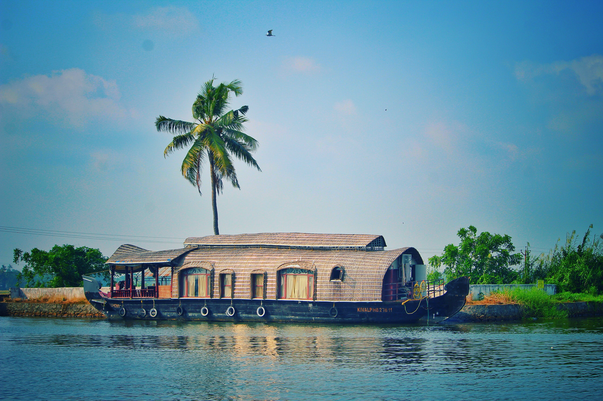

Kathakali
Kathakali is a major form of classical Indian dance.It is a "story game" genre of art, but one
distinguished by the elaborately colourful make-up and costumes of the traditional male
actor-dancers.It
is native to the Malayalam-speaking southwestern region of Kerala and is almost entirely practiced
and
appreciated by Malayali people. Kathakali's roots are unclear. The fully developed style of
Kathakali originated around the 17th century, but its roots are in the temple and folk arts (such as
Krishnanattam and religious drama of the kingdom of the Zamorin of Calicut) of the southwestern
Indian peninsula.
Munnar
Yet another gorgeous hill station in the lap of the fascinating Western Ghats, Munnar needs no
introduction. Rising 1,600m above the sea level, a vacation in the beguiling locales of this hilly
retreat is all about the lofty clouds, picturesque mountains, rolling hills, and a soothing
ambience.
Canopied mostly by never-ending tea plantations and lush forests, you simply cannot miss out Munnar
while searching for the best tourist destination in Kerala. Be it during the summer or the winter,
monsoon or the spring, Munnar will always make you crave for more!

Biyyam Lake
Flanked on the western coast by the Arabian Sea, Kerala one of the long coastline of 580 km (360 mi);
all of which is virtually dotted with sandy beaches.
Boating at Biyyam Lake near Ponnani
Kovalam beach near Thiruvananthapuram was among the first beaches in Kerala to attract tourists.
Rediscovered by back-packers and tan-seekers in the 1960s and followed by hordes of hippies in the
1970s, Kovalam today is one of the most visited beaches in the state. Other popularly visited
beaches in the state include those at Kappad, Alappuzha, Kozhikode[citation needed] Beach.